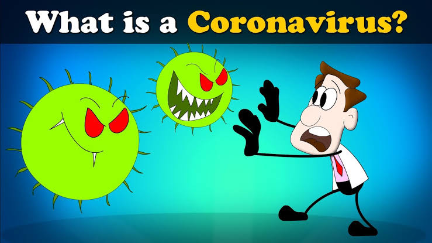
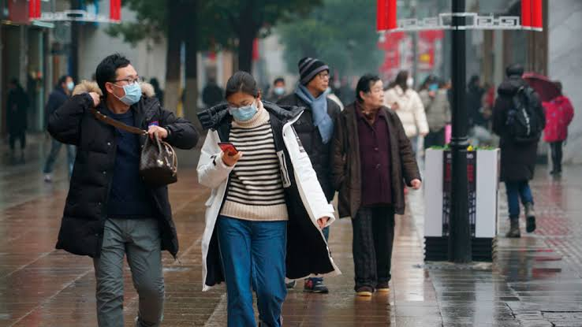

What Are Corona Viruses?
 SARS-CoV-2 belongs to a family of single-stranded RNA viruses known as coronaviridae, a common type of virus which affects mammals, birds and reptiles.
In humans, it commonly causes mild infections, similar to the common cold, and accounts for 10–30% of upper respiratory tract infections in adults[4]. More serious infections are rare, although coronaviruses can cause enteric and neurological disease. The incubation period of a coronavirus varies but is generally up to two weeks.
Previous coronavirus outbreaks include Middle East respiratory syndrome (MERS), first reported in Saudi Arabia in September 2012, and severe acute respiratory syndrome (SARS), identified in southern China in 2003. MERS infected around 2,500 people and led to more than 850 deaths while SARS infected more than 8,000 people and resulted in nearly 800 deaths. The case fatality rates for these conditions were 35% and 10%, respectively.
SARS-CoV-2 is a new strain of coronavirus that has not been previously identified in humans. Although the incubation period of this strain is currently unknown, the United States Centers for Disease Control and Prevention indicate that symptoms may appear in as few as 2 days or as long as 14 days after exposure. Chinese researchers have indicated that SARS-CoV-2 may be infectious during its incubation period.
The number of cases and deaths outside of China overtook those within it on 16 March 2020.
Where Has The New Corona Virus Come From?
How Covid-19 began has become increasingly contentious, with the US and other allies suggesting China has not been transparent about the origins of the outbreak.
Donald Trump, the US president, has given credence to the idea that intelligence exists suggesting the virus may have escaped from a lab in Wuhan, although the US intelligence community has pointedly declined to back this up. The scientific community says there is no current evidence for this claim.
Currently, experts believe COVID-19 originated from a seafood market in Wuhan. As well as selling seafood the market engages in the illegal trade of wild animals, including bats and pangolins. Coronaviruses, which can cause anything from mild cold and flu symptoms to serious viral strains like COVID-19, can jump from animals to humans. Experts believe this is how the COVID-19 disease was contracted by several stallholders at the market.
While nothing has been confirmed, a team of Wuhan virologists recently published a paper suggesting COVID-19 has an almost identical genetic makeup to a similar coronavirus found in bats. Other experts argue that COVID-19 shares up to 92.4% of the same genetic sequences as coronavirus found in pangolins. Also known as scaly anteaters, the mammals are coveted in China for their medicinal qualities. While poaching, trafficking and selling pangolins is illegal, tens of thousands of the animals are killed every year, with the Wuhan seafood market in question a known supplier. "If there is one clear message from this global crisis, it's that the sale and consumption of pangolins in [live animal] markets should be strictly prohibited to avoid future pandemics," urges Paul Thomson, cofounder of non-profit conservation group Save Pangolins.
if you want to know more about the covid-19 pandemic Click Here
What Causes Covid-19 and How Does It Spread?
 SARS-CoV-2 spreads from person to person through close communities.
SARS-CoV-2 spreads from person to person through close communities.
When people with COVID-19 breathe out or cough, they expel tiny droplets that contain the virus. These droplets can enter the mouth or nose of someone without the virus, causing an infection to occur.
The most common way that this illness spreads is through close contact with someone who has the infection. Close contact is within around 6 feet.
The disease is most contagious when a person’s symptoms are at their peak. However it is possible for someone without symptoms to spread the virus. A new study suggests that 10% of infections are from people exhibiting no symptoms.
Droplets containing the virus can also land on nearby surfaces or objects. Other people can pick up the virus by touching these surfaces or objects. Infection is likely if the person then touches their nose, eyes, or mouth.It is important to note that COVID-19 is new, and research is still ongoing. There may also be other ways that the new coronavirus can spread.
Symptoms
Common symptoms of COVID-19 include:
-
A Fever.
-
Breathlessness.
-
Cough.
-
A Sore-throat.
-
A headache.
-
Muscle Pain.
-
Chills.
-
New Loss Of Taste Or Smell.
How To Prevent Covid-19

At this time there is no vaccine and no medication available that can prevent COVID-19. However, there are a number to ways to protect yourself and others around you from getting COVID-19:
-
Avoid touching your face, eyes, nose, and mouth with unwashed hands.
-
Do not share personal items such as cups, eating utensils, towels, or bedding. Wash anything you have used in soap and water.
-
Clean all "high-touch" areas in the home, such as doorknobs, bathroom and kitchen fixtures, toilets, phones, tablets, and counters and other surfaces. Use a household cleaning spray and follow instructions for use.
-
Wash your hands many times a day with soap and running water for at least 20 seconds. Do this before eating or preparing food, after using the toilet, and after coughing, sneezing, or blowing your nose. Use an alcohol-based hand sanitizer (at least 60% alcohol) if soap and water are not available.
SOCIAL (OR PHYSICAL) DISTANCING
To help prevent the spread of COVID-19 within the community, governments throughout the world and in the United States are recommending that people practice social distancing, also called physical distancing. This applies to people of all ages, including young people, teenagers, and children. While anyone can get sick, not everyone has the same risk of serious illness from COVID-19. Older people and people with existing health conditions such as heart disease, diabetes, or lung disease have a higher risk of developing severe illness.Everyone can help slow the spread of COVID-19 and help protect those who are most vulnerable by taking the following steps.
-
Avoid crowded public places and mass gatherings, such as shopping centers, movie theaters, concert halls, conferences, and sports stadiums.
-
Avoid large and small gatherings in private homes and public spaces such as parks, shops, and restaurants. Teens should not gather in groups at a park to play sports. Do not take children on in-person play dates.
-
Stay at least 6 feet (1.8 meters) from other people.
-
Work from home (if that is an option).
-
If possible, avoid public transportation and rideshares.
If you must go out for groceries or other needs:
-
Always wear a face mask or cloth face cover when you will be around other people, such as at a grocery store. The Centers for Disease Control and Prevention has information on how to use and make cloth face masks.
-
Stay at least 6 feet (1.8 meters) apart from other people in the store, even if you are wearing a mask.
-
If available, consider a grocery or pharmacy delivery service.
While you must remain apart from others, you don't have to be socially isolated. Reach out to friends and family via phone or video chats. Schedule virtual social visits often. Doing so can help remind you that we are all in this together, and you are not alone.
To find out more about social distancing in your community, check your local or state government website.
Home Isolation
If you have COVID-19 or have symptoms of it, you must isolate yourself at home and avoid contact with other people, both inside and outside your home, to avoid spreading the illness. This is called home isolation (also known as "self-quarantine").
-
As much as possible, stay in a specific room and away from others in your home. Use a separate bathroom if you can. Do not leave your home except to get medical care.
-
Do not travel while sick. Do not use public transportation or taxis.
-
Keep track of your symptoms and stay in touch with your doctor. Before you go to a doctor's office or emergency department (ED), call ahead and tell them that you have or think you may have COVID-19.
-
Use a face mask or cloth face cover when you see your health care provider and anytime other people are in the same room with you. If you can't wear a mask, for example, due to breathing problems, people in your home should wear a mask if they need to be in the same room with you.
-
Follow the same hygiene practices everyone should follow: cover coughs and sneezes, wash your hands, don't touch your face, don't share personal items, and clean high-touch areas in the home.
-
Avoid contact with pets or other animals. (SARS-CoV-2 can spread from people to animals but it is not known how often this happens.
You should remain at home, avoid contact with people, and follow the guidance of your provider and local health department about when to stop home isolation. The decision to stop home isolation depends on the local situation in your area.
For the most up-to-date news and information about COVID-19, Click Here